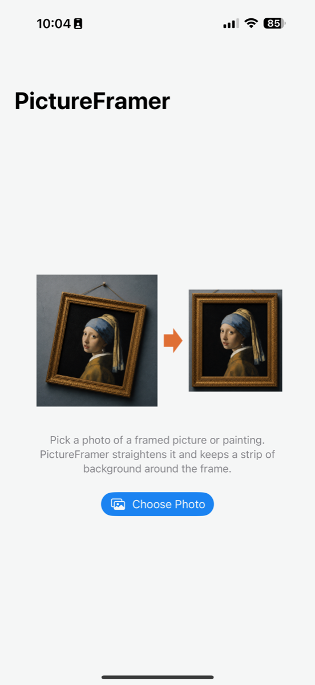
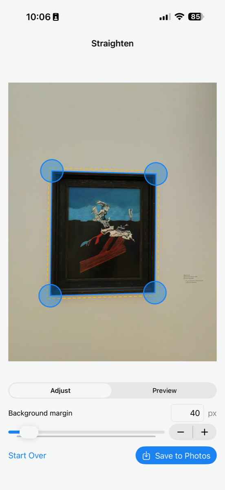
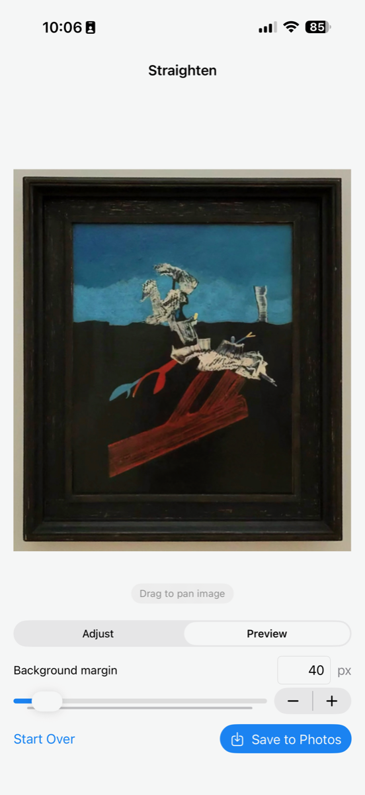
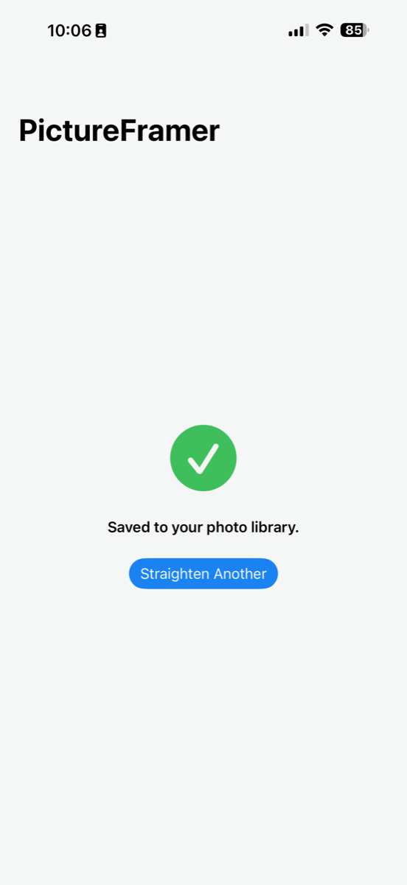
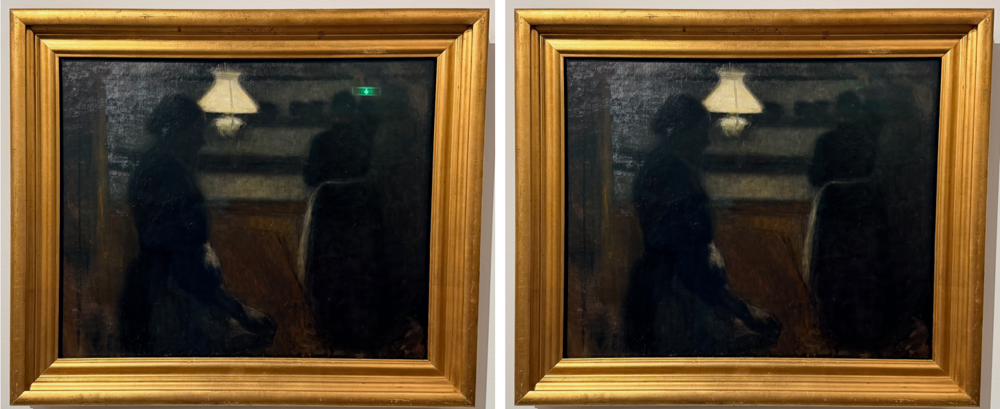
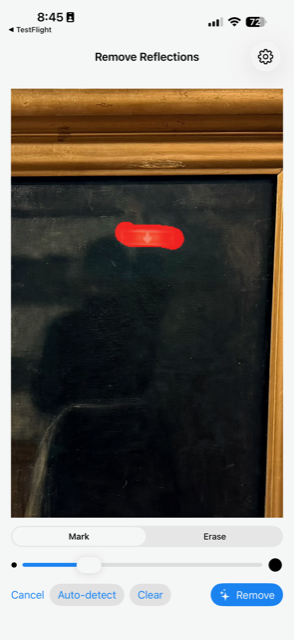
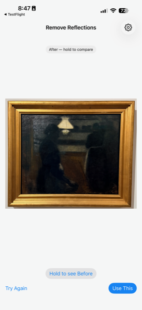
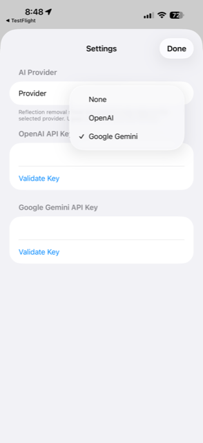

Four taps from crooked to straight
PictureFramer finds the outer edge of the artwork — frame included — corrects rotation and perspective in one pass, and keeps a strip of the real wall around it.

Pick a photo
Import any photo of a framed picture or painting from your library.

Automatic detection
The frame is found for you. Nudge a corner by hand if you like.

Preview & fine-tune
Set how much wall stays around the frame. Drag to recenter. What you see is what you save.

Save
The full-resolution result lands straight back in your photo library.
Museum glass? Gone.
Skylights, spotlights and exit signs love to reflect off protective glass. Mark the glare, and AI repaints the artwork underneath — touching only the pixels you marked.


Mark the glare
PictureFramer suggests a mask automatically. Fine-tune it with your finger — brush to add, erase to trim.

Let AI repaint it
Your chosen AI model reconstructs the artwork under the glare. Hold to compare before and after, then accept or try again.

Your key, your choice
Bring your own OpenAI or Google Gemini API key. Stored in the iOS Keychain; used only when you tap Remove.
Everything outside your mask is untouched — not “mostly unchanged”, but pixel-for-pixel identical to the original. The straightening pipeline never needs the internet; reflection removal is the one optional step that does.
Setting up AI — two minutes, once
Reflection removal uses your own AI account, so there's no subscription and no middleman. Grab a key, paste it into the app, done.
- Get an API key from either provider:
- OpenAI — create a key at platform.openai.com/api-keys. Any funded account works.
- Google Gemini — create a key at aistudio.google.com/apikey. Important: the image model needs a paid plan — free-tier keys look valid but every removal fails with a quota error. Enable billing on the key's project first.
- Open Settings in the app (gear icon on the start screen), pick your provider, paste the key, and tap Validate Key.
- That's it. The key is stored in your iPhone's Keychain and used only when you tap Remove. A typical removal costs a few cents, billed by your provider.
Seeing “Rate-limited by the provider … check your plan and billing details” with Gemini? That's the free-tier quota, not actual rate limiting — upgrade the plan or switch to OpenAI.
Made for museum days
Everything you photograph from the side, delivered as if you had stood dead center.
True perspective correction
Rotation, horizontal and vertical keystone fixed in a single transform — not just a crop.
Real background, not padding
The margin around the frame is the actual wall from your photo, at any width you choose.
Full resolution
Previews are instant; the saved image is rendered from your original pixels.
Works without a frame
Unframed canvases straighten just as well — anything with a clean rectangular edge.
AI reflection removal
Glare on protective glass? Mark it and let AI rebuild the artwork beneath — only inside your mask, guaranteed.
Private by design
Straightening happens entirely on your iPhone — no accounts, no tracking. The optional reflection remover sends only the marked region to the AI provider you pick, with your own key, only when you tap Remove.
Shadow-proof
Cast shadow pulling the crop off-center? Drag the preview to recenter it.
Support
Questions, feedback, or a painting that won't straighten? Get in touch.
Contact Sascha Corti